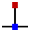

Modification de la géométrie
Dans TecZone Bend, vous disposez d’un puissant éditeur d’esquisse 2D pour modifier, nettoyer ou ajouter des éléments à votre géométrie. Utilisez la touche de raccourci S pour passer en mode esquisse. L’éditeur affiche la pièce en vue développée.

Dans le développé, cliquez sur l’icône Sketch  ou appuyez sur la touche de raccourci S.
ou appuyez sur la touche de raccourci S.
Un menu s’ouvre avec différentes icônes pour usiner le développé :

Panneau d’esquisse
| Icône | Symbole | Signification |
|---|---|---|
|
Select |
Sélectionne des objets, des lignes, des entrées, etc. |
|
Line |
Esquisse une ligne |
|
Connected line |
Esquisse un nombre quelconque de lignes |
|
Parallel |
Esquisse une ligne parallèle à une ligne |
 |
Normal |
Esquisse une tangente à une courbe |
|
Bendline |
Esquisse une ligne normale à une ligne |
|
Center-Point Arc |
Esquisse une ligne de pliage |
|
2-Point Arc |
Esquisse un arc à partir d’un point central, d’un point de départ et d’un point final |
|
3-Point Arc |
Esquisse un arc de cercle passant par deux points définis (point de départ et point final) |
|
Tangent Arc |
Esquisse un arc tangent aux entités d’esquisse |
|
Rectangle |
Esquisse un rectangle |
Center-Point Rectangle |
Esquisse un rectangle à partir du centre |
|
|
Circle |
Esquisse un cercle. Sélectionnez le point central du cercle et faites glisser le curseur pour définir le rayon ou entrez une valeur pour le rayon |
|
2-Point Circle |
Esquisse un cercle en fonction de la circonférence. Sélectionnez un point sur la circonférence, puis un deuxième point et un troisième point. |
|
3-Point Circle |
Esquisse un cercle en fonction de la circonférence. Sélectionnez un point sur la circonférence, puis un deuxième point et un troisième point. |
|
2-Tangent Circle |
Esquisse un cercle avec deux tangentes. Entrez le diamètre du cercle, puis sélectionnez la première tangente puis la deuxième tangente. |
|
3-Tangent Circle |
Esquisse un cercle avec trois tangentes. Entrez le diamètre du cercle, puis sélectionnez la première tangente, puis la deuxième tangente et enfin la troisième tangente. |
Inscribed Polygon |
Esquisse un cercle avec trois tangentes. Entrez le diamètre du cercle, puis sélectionnez la première tangente, puis la deuxième tangente et enfin la troisième tangente. |
|
|
Circumscribed Polygon |
Esquisse un polygone. Indiquez le nombre de bords de pli et sélectionnez un point central et le milieu d’un bord latéral |
|
Edge Polygon |
Esquisse un polygone. Indiquez le nombre de bords de pli et définissez le point de départ et le point final bord de pli. |
|
Fillet |
Arrondit l’angle au point d’angle de deux entités d’esquisse avec un rayon saisi, ce qui crée un arc tangentiel |
|
Chamfer |
Crée un chanfrein sur l’angle de l’intersection de deux entités d’esquisse |
|
In-Fillet |
Coupe l’angle à l’intersection de deux entités d’esquisse avec un rayon saisi |
|
Corner Step |
Coupe l’angle à l’intersection de deux entités d’esquisse avec un rectangle. La taille du rectangle peut être saisie au préalable. |
|
Edge Recess |
Crée un grugeage rectangulaire. Vous devez entrer la distance de l’angle, la profondeur de grugeage, puis sélectionner un angle. |
|
Edge U-Cut |
Crée un grugeage en forme de trou oblong. Vous devez entrer la distance de l’angle, la largeur de grugeage, la profondeur de grugeage puis sélectionner un angle. |
|
Edge V-Cut |
Crée un grugeage triangulaire. Vous devez entrer la distance de l’angle, la largeur de grugeage, la profondeur de grugeage puis sélectionner un angle. |
|
Keyslot |
Crée un passage de vapeur dans un cercle avec les valeurs saisies. |
|
Fillet 3-Seg |
Arrondit les trois entités d’esquisse connectés |
|
Extend |
Sélectionnez l’entité d’esquisse à étendre |
|
Trim |
Sélectionnez l’entité d’esquisse à rogner |
|
Join |
Utilisé pour déligner et joindre plusieurs polylignes séparées en une seule |
|
Offset |
Décalez une ou plusieurs entités d’esquisse, bords de modèle esquissé ou faces de modèle d’une distance spécifiée |
Move |
Sélectionnez une entité d’esquisse avec ctrl, sélectionnez un point de référence et déplacez l’entité d’esquisse |
|
|
Rotate |
Sélectionnez une entité d’esquisse avec ctrl, sélectionnez un point central de rotation, puis un point de départ et un point final pour faire tourner l’entité d’esquisse |
|
Scale |
Sélectionnez une entité d’esquisse avec ctrl, sélectionnez un point de base, puis un point de référence de départ et un point de référence final pour mettre à l’échelle l’entité d’esquisse |
Mirror |
Sélectionnez une entité d’esquisse avec ctrl, puis le début de la ligne miroir et ensuite la fin de la ligne miroir pour refléter l’entité d’esquisse |
|
|
Rectangle Array |
Utilisez des répétitions linéaires pour créer plusieurs copies référencées d’une ou plusieurs entités d’esquisse que vous pouvez espacer à distances égales le long d’une ou deux trajectoires linéaires. Cliquez sur la répétition linéaire et entrez les valeurs souhaitées |
|
Polar Array |
Utilisez des répétitions circulaires pour créer plusieurs copies référencées d’une ou plusieurs entités d’esquisse que vous pouvez espacer à distances égales autour d’un axe. Cliquez sur les répétitions circulaires et entrez les valeurs souhaitées |
|
Union |
Sélectionnez deux ou plusieurs entités d’esquisse fermées pour combiner les surfaces entre elles |
|
Intersection |
Sélectionnez deux ou plusieurs entités d’esquisse fermés pour générer une zone de découpe des entités sélectionnées |
|
Subtraction |
Sélectionnez deux ou plusieurs entités d’esquisse fermées pour déligner la surface |
|
Copy Notch |
Vous pouvez réaliser plusieurs copies d’un grugeage le long d’un bord à l’aide de cet outil. Commencez par saisir l’espacement entre les copies et le nombre de copies du grugeage que vous souhaitez réaliser. Ensuite, sélectionnez le grugeage en cliquant sur les deux segments de ligne adjacents au grugeage |
|
Delete Notch |
Vous pouvez supprimer un grugeage dans un angle ou le long d’un segment de ligne à l’aide de cet outil. Cliquez sur les deux segments de ligne adjacents au grugeage pour le supprimer |
|
Mirror Notch |
Vous pouvez faire refléter un grugeage dans un angle ou le long d’un segment de ligne à l’aide de cet outil. Cliquez sur les deux segments de ligne adjacents au grugeage pour le faire refléter |
|
Spline |
Pour commencer une nouvelle spline, cliquez sur le point de départ, puis sur les points suivants pour créer la spline. Si vous souhaitez fermer la spline, appuyez sur ALT, puis cliquez |
|
Profile |
Saisissez la longueur de la base, la hauteur de bordage, l’épaisseur, l’angle de la bride, le rayon intérieur, puis appuyez sur Entrée pour créer un profilé |
|
Text |
Permet de dessiner le texte qui sera marqué sur la pièce par la machine d’usinage laser. Lorsque vous cliquez sur ce bouton d’outil, la barre de saisie affiche des champs de saisie pour le texte, la taille et l’angle de rotation |
|
Truetype Text |
Permet de prendre les formes des caractères de n’importe quelle police TrueType et de les convertir en polylignes. La préparation laser peut ensuite être appliquée sur ces polylignes, qui peuvent alors être découpées. La première fois que vous cliquez sur ce bouton, la boîte de dialogue Police s’affiche, vous permettant de sélectionner la police à utiliser pour le texte |
|
Common Shape |
Permet de créer plusieurs formes courantes et de les insérer dans le dessin. Lorsque vous cliquez sur ce bouton, la fenêtre de dialogue Créer une forme s’affiche et vous permet de choisir parmi la palette de formes courantes répertoriées |
|
Simple Dimension |
Sélectionnez le premier point de cotation, puis le deuxième point de cotation et la position et positionnez la ligne de cotation |
|
Baseline Dimension |
Sélectionnez le premier point de cotation, puis le deuxième point de cotation et la position et positionnez la ligne de cotation |
|
Continue Dimension |
Sélectionnez le premier point de cotation, puis le deuxième point de cotation, positionnez la ligne de cotation et sélectionnez le point de cotation suivant |
|
Horizontal Ordinate Dimension |
Les dimensions ordonnées sont un ensemble de dimensions mesurées à partir de l’ordonnée zéro dans le dessin. Sélectionnez un point de référence et positionnez la cotation |
|
Vertical Ordinate Dimension |
Les dimensions ordonnées sont un ensemble de dimensions mesurées à partir de l’ordonnée zéro dans le dessin. Sélectionnez un point de référence et positionnez la cotation |
Angular Dimension |
Crée une cotation pour un angle. Sélectionnez la première ligne, puis la deuxième ligne sur laquelle vous souhaitez dimensionner l’angle |
|
|
Radius Dimension |
Crée une cotation pour un rayon. Sélectionnez le cercle sur lequel vous souhaitez dimensionner le rayon. Dimensionnez le diamètre avec ctrl |
|
Center Point Radius Dimension |
Crée une cotation avec ligne de repère continue pour un rayon. Sélectionnez le cercle sur lequel vous souhaitez dimensionner le rayon. Dimensionnez le diamètre avec ctrl |
|
Callout Dimension |
Permet d’ajouter des notes au dessin sous forme de légendes. Pour créer une légende, tapez le texte à afficher, cliquez pour indiquer où la flèche doit pointer, puis cliquez à nouveau pour indiquer où le texte doit être placé. |
|
Segment Dimension |
Permet d’ajouter une cotation pour les segments droits et courbes. Cliquez sur le segment à dimensionner, puis cliquez à nouveau pour positionner la cote. Ou maintenez la touche enfoncée et cliquez sur un segment pour positionner la cote automatiquement. |